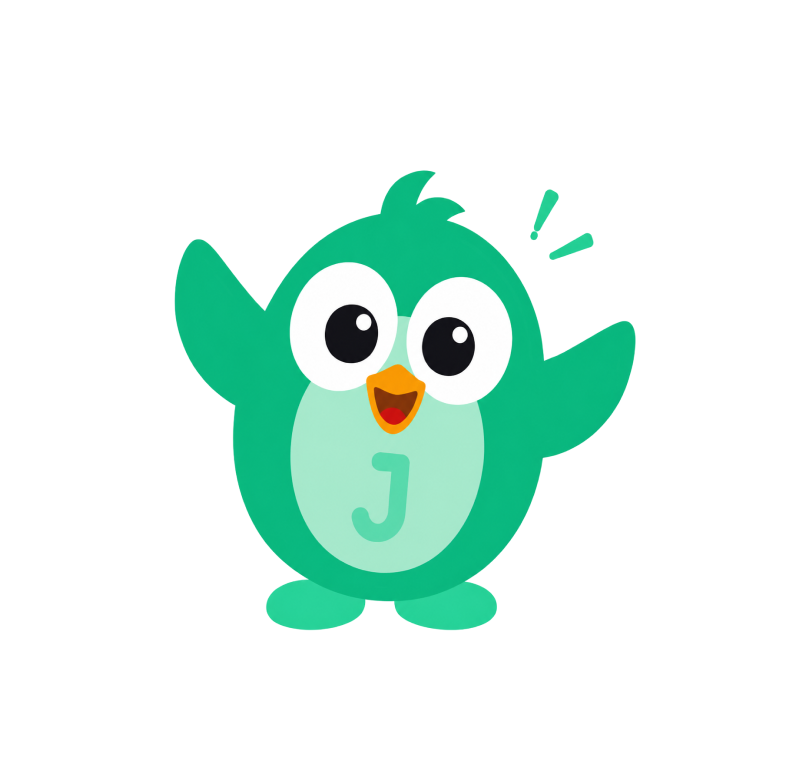
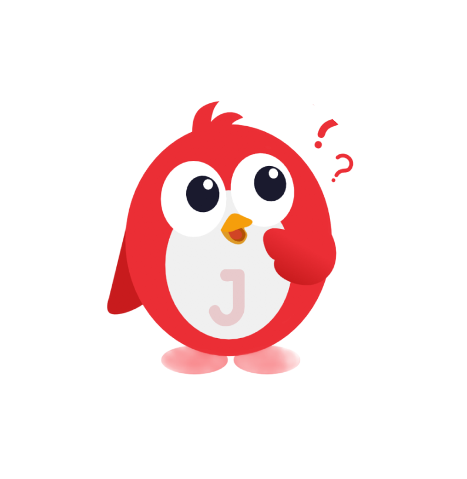

The product already existed.
The experience needed to evolve.
JoraIQ started with an existing LMS experience. The challenge was to rethink the product experience, bring consistency to the interface, introduce a clearer learning journey and extend the experience into mobile.
Existing Product
Simple LMS
New Product
Mobile App + Web
Core Focus
Personalized Learning
Design Challenge
Engagement + Clarity
01 — The Challenge
The LMS worked. The experience didn't.
The existing LMS had the foundation of a learning platform, but the experience felt inconsistent, manual and difficult to navigate.


Inconsistent visual language
Too many competing UI elements
Unclear learning progression
Manual learning experience
Limited engagement mechanisms
No strong mobile-first experience
03 — Research
I started with the learner, not the interface.
Before jumping into high-fidelity screens, I spoke with learners already using the platform to understand their frustrations, expectations and learning behavior.


Key Questions Asked
- Q: "What is the hardest part about learning through the current platform?"
- Q: "Do you always know what you should study next?"
- Q: "What makes you lose motivation while learning?"
04 — What I Learned
The problem wasn't just usability. It was motivation.
Direction
"I don't always know what I should learn next."
Solution: Make the learning path visible.
Motivation
"Learning can feel repetitive after a while."
Solution: Introduce meaningful feedback and progress.
Confidence
"I want to know if I'm actually improving."
Solution: Make progress measurable.
Support
"Sometimes I just need a little help."
Solution: Bring contextual AI assistance into the learning flow.
07 — Rapid Prototyping
Before polishing the product, I made the idea tangible.
The founders wanted to see how the new experience could feel. I used AI-assisted prototyping tools (Claude, ChatGPT, Lovable) to rapidly turn ideas into an interactive direction that could be reviewed and challenged.
Note: The AI prototype was not the final product. It was a fast alignment tool.


09 — LMS Redesign
A calmer interface for a more intelligent product.
Clarity
Reduce visual noise and strengthen hierarchy.
Personalization
Make each learner's path visible.
Consistency
Build reusable components and patterns.
Momentum
Make progress and next actions obvious.
Dashboard Redesign


Drag the divider to compare Old vs. New
Learning Path Redesign


12 — Meet Jora
A learning product needed a learning companion.
I designed Jora as a visual and emotional layer across the product — helping the experience feel more human, approachable and expressive.


Jora reacts to the learner, not just the screen.

Correct
Celebration

Incorrect
Encouragement

Need Help
Support
14 — Mobile Experience
The learning journey shouldn't stop when the laptop closes.
Alongside the LMS redesign, I explored a mobile experience designed around quick learning sessions, progress and daily engagement.
Swipe to explore screens
18 — Impact
The redesign changed more than the interface.
Product
Clearer learning journey
The experience was reframed around goals, progression and next actions.
Engagement
More human
Jora, feedback states and gamification introduce emotional reinforcement.
Platform
Web + Mobile
The experience expanded from an LMS into a broader learning ecosystem.
19 — Reflection
What this project taught me.
The biggest opportunity was not visual polish. It was changing how learners move through the product.
A rough prototype can align a team faster than a polished presentation.
Jora became part of the product's feedback language, not just a decorative mascot.